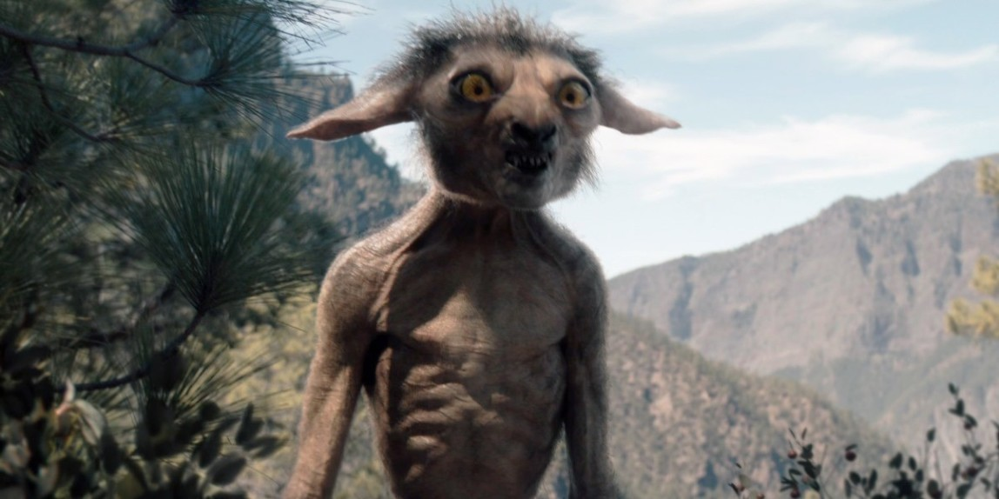
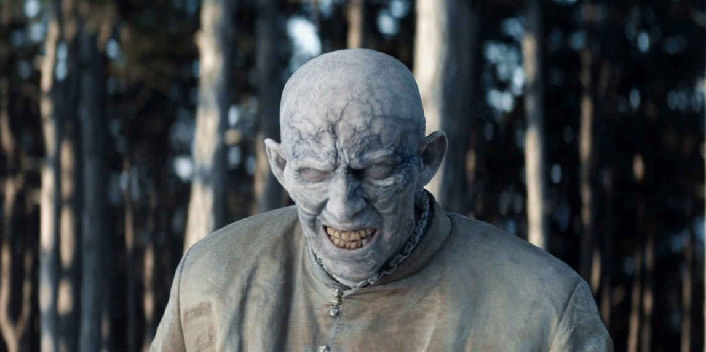
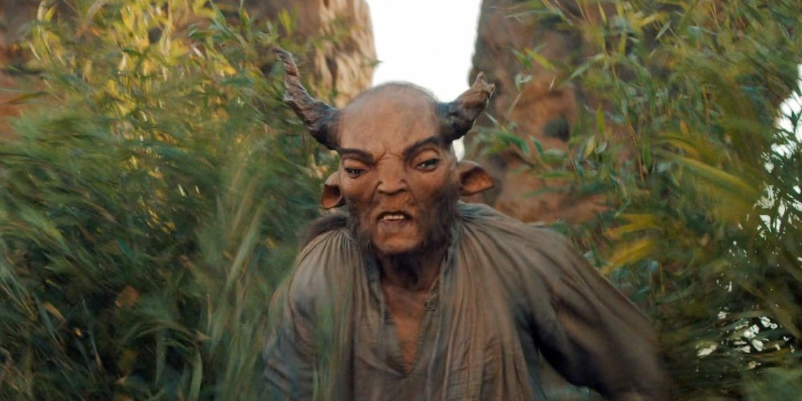
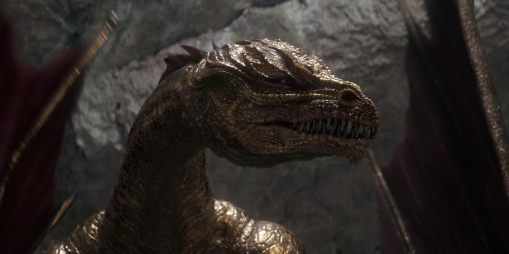
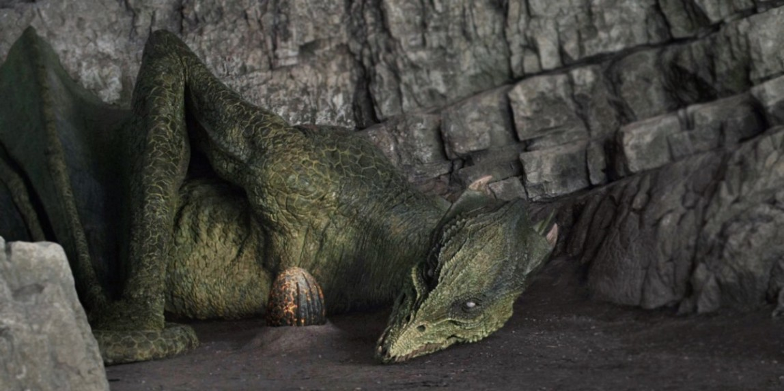
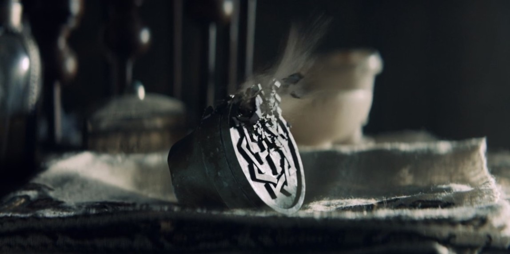
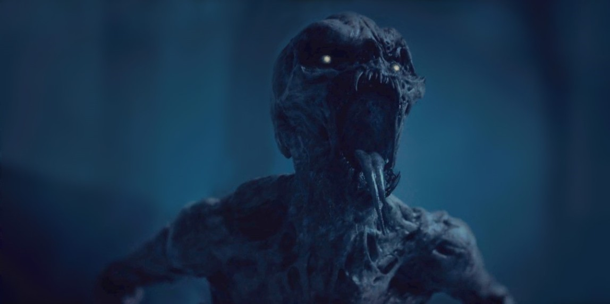
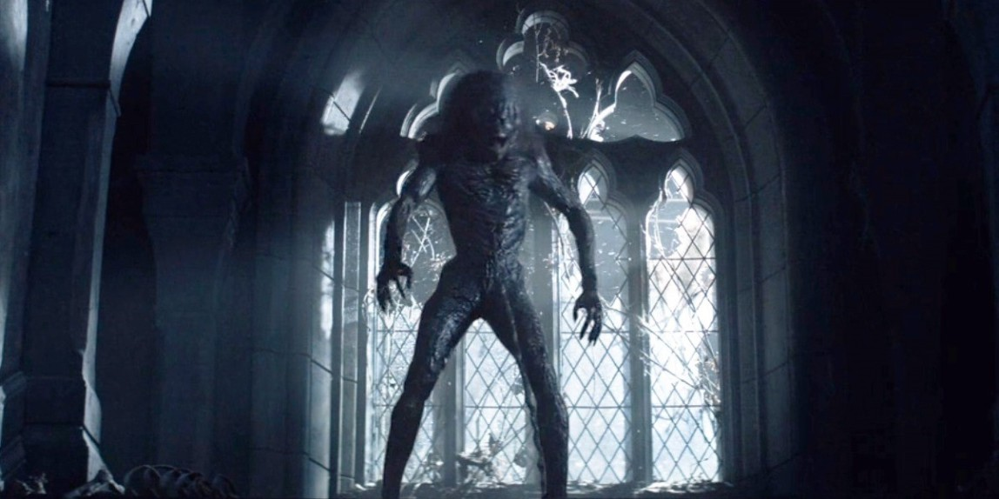
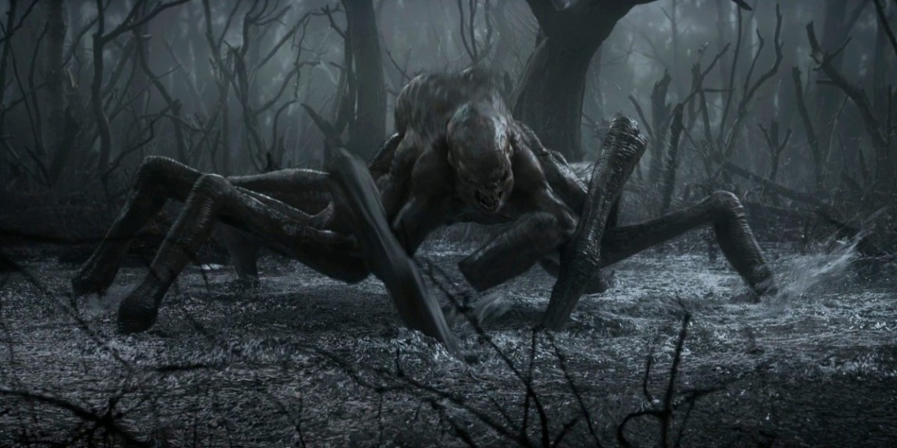

Хиррика
Хирикки — еще более редкие существа, чем драконы, на которых охотились практически до полного исчезновения. У них очень тонкие, жилистые тела, покрытые пятнистой шерстью.Однако, пусть вас не обманывает пушистая внешность этих существ: как только взгляд хирикки упадет на аппетитную мишень, она не колеблясь оголит свои острые зубы.

Допплер
Допплер — это уникальное существо, обладающее даром метаморфозы и несомненной склонностью к доброте. Однако, репутация всего вида была подорвана единственным допплером, который пытался похитить Цири в обмен на награду.

Сильван
Сильван — чрезвычайно редкое, высокоинтеллектуальное травоядное существо. Этот вид ходит прямо, как люди, и они даже разговаривают на человеческом языке. Что их отличает от людей, так это особая диета и приличное количество волос на теле.

Золотой дракон
Мифическое змееподобное существо из семейства драконидов. Не путать с белыми, черными, красными, зелеными, или каменными драконами. Есть путешественники, которые утверждают, что видели блеск великолепной золотой чешуи зверя в пустыне Корат, но нет гарантий, что это не было галлюцинацией, вызванной обезвоживанием.

Зеленый дракон
Змееподобные существа из семейства драконидов. Не путать с белыми, черными, красными, каменными, или золотыми драконами. Последнее зарегистрированное наблюдение произошло в 1262 году, на окраине гор короля Недамира. Этот дракон был убит Ярпеном Зигрином, хотя в доказательство этого он предоставил только несколько драконьих зубов.

Джинн
Джинн — это неуловимый элементаль воздуха. Эти могущественные существа желанны по всему Континенту из-за их уникальной магической силы. Джиннов можно поймать в определенные бутылки и керамические сосуды, но будьте осторожны: они гораздо более могущественны, чем все остальное, что вы когда-либо находили на дне бутылки.
Попав в неволю, Джинны становятся привязанными к своему хозяину — они должны исполнить три желания, прежде чем снова станут свободными.

Гуль
Упыри, или Гули — это скелетоподобные существа из семейства некрофагов. Упыри приходят туда, где можно найти мертвые тела, бродят по кладбищам и полям сражений в поисках свежего мяса. После укуса они оставляют свою жертву гнить, предпочитая вкус старой плоти свежему мясу. Как только запах трупов выманивает их из укрытия в земле, они нападают группами.

Стрыга
Чрезвычайно злобная тварь женского пола, которая питает чувство сильной ненависти практически ко всем живым существам.Легенда гласит, что Стрыги охотятся только при полной луне, но во время этого процесса они ослеплены ненавистью и нападают без колебаний.

Кикимора
Водяное насекомообразное. Вы редко встретите его вдали от озера или болота. Обладая конечностями, похожими на человеческие, их тела также имеют сходство с нашими. Тем не менее, львиная доля тела Кикиморы и множества различных частей животных.